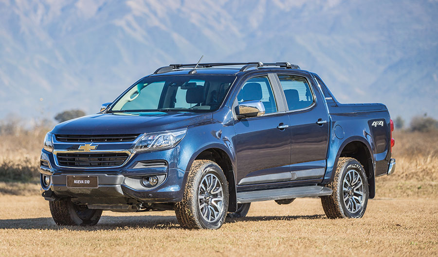
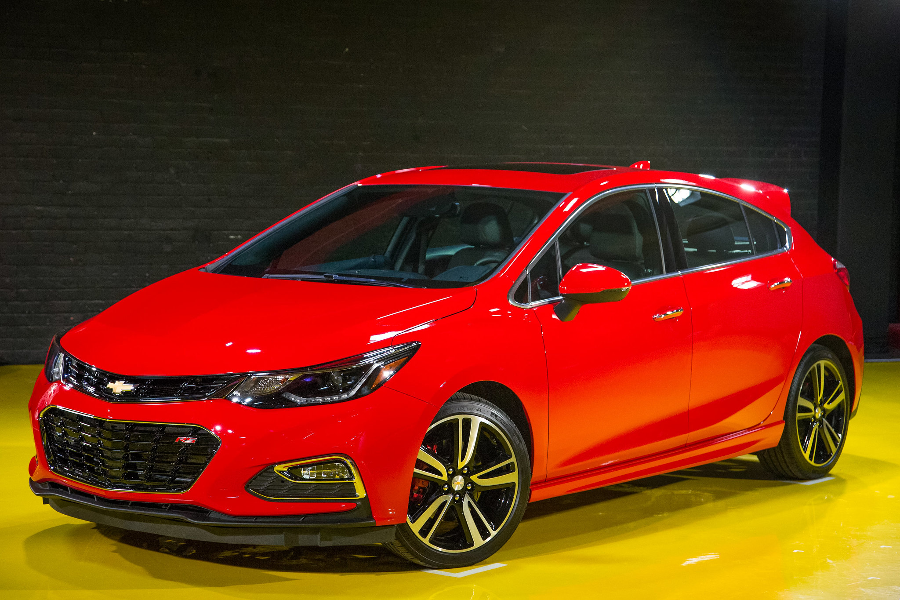
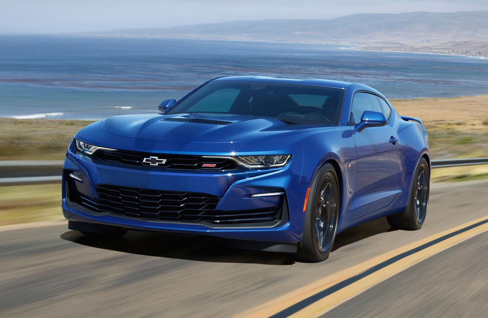
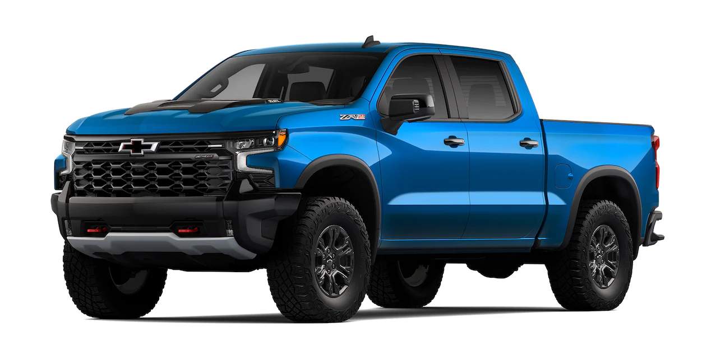

Chevrolet
Se la re bancan, fieles compañeros. Pero no es ford.
S10
- Motor: Motor 2.8 turbo diésel 200cv (3600rpm).
- Tranmision:At. de 6 vel.
- Traccion: 4x4
- Personalidad: 5
Cruze
- Motor: 1.4 Turbo de 4 cyl. en linea Nafta 153cv(5000rpm)
- Transmision: At de 6 vel.
- Traccion: FWD
- Personalidad: 6.
Camaro
- Motor: Motor 6.2L V8, que entrega 455 HP.
- Tranmision: Automática de 10 velocidades con cambios al volante.
- Traccion: RWD.
- Personalidad: 8.
Silverado
- Motor: 5.3 L V8 Naftero 355cv(5600rpm).
- Tranmision: Automática de 10 velocidades.
- Traccion: 4x4.
- Personalidad: 7.
-

- 
-
z
- 